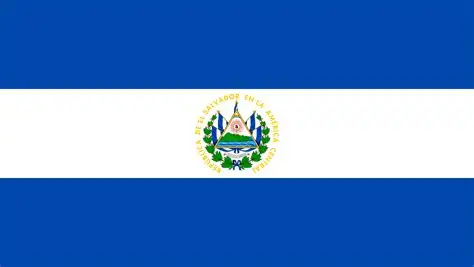

Raúl A. García
About me
My name is Raúl Garcia, I am from El Salvador, a little country in Central América. I am currently working in a call center as a customer service representative. I like to listen to music, read the scriptures, and play videogames. I really love to help others and do everything with all my heart.
El Salvador is a country in Central America located on the Pacific coast, who is well known by its most delicious typical food, pupusas. This country's landscapes are really beautiful and fresh, so everybody goes to the beach on vacations because of the great enviroment.